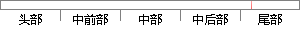

每一项目阶段结束之前，组长组织一次阶段评审会，评估整个阶段的工作效率和质量。
片段位置图

相似结果|
相似片段 1：持续评估其成效。每一项目阶段结束之前 (里程碑前后)，组织一次阶段评审会，评估整个阶段的工作效率和成果质量。尽量与项 目例会合并，并邀请组长和其他组成员参加评议。亦可询问老师的意见。对于重大的风险
相似片段 2：评审机制：每周例会上小组讨论形成一致意见后即为通过，相关负责人针对改进意见开展下一周工作，严格执行例会上锁制定的决策。小组会议持续评估其成效。每一项目阶段结束之前 (里程碑前后)，组织一次阶段评审会
|
※ 片段修改建议 ※
近似词参考：- 结束：竣事 收场
- 之前：以前
- 组织：构造
- 整个：全部
系统自动生成语句：每一项目阶段竣事以前，组长构造一次阶段评审会，评估全部阶段的工作效率和质量。
注：本片段修改建议为系统自动生成，仅供参考。